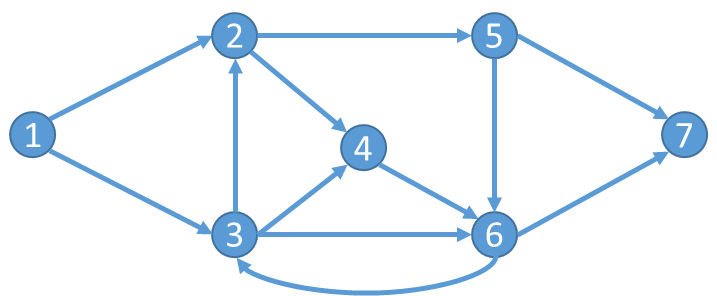

Supply Chain Management
Supply ChainPlanning and coordinating the flow of goods, information, and money from sourcing to final delivery.
Example: coordinating suppliers, warehouses, carriers, and retailers.
Decision Analytics in Global Logistics — explore multimodal transport, supply chain economics, and operations optimisation.
A structured curriculum covering logistics from theory to application
DASE4122 Global Logistics and Transportation Systems — 8 sample modules
Open a module to preview its learning points. The full lecture slides are omitted from this public demo.
Understand how decision analytics supports choices across a global logistics network.
Start with the people, assets, and processes that move goods from origin to destination.
Represent a transport network as nodes and directed links, then compare routes.
Use economics to explain freight demand and pricing decisions.
Plan truck operations around customer demand and vehicle capacity.
Explore railway terminal and train planning decisions.
Compare maritime operations and their costs and emissions.
Preview air cargo movement and ground handling.
Search sample logistics and supply chain terminology
Planning and coordinating the flow of goods, information, and money from sourcing to final delivery.
Receiving materials or producing goods only when needed, to reduce inventory costs and waste.
Moving freight using two or more transport modes without handling the cargo inside its container when modes change.
Twenty-foot Equivalent Unit, the standard measure of container capacity.
A measure of how responsive demand is to a change in price.
Finding routes for a fleet of vehicles to serve customers while meeting constraints and minimising cost.
Finding the shortest tour that visits each location once and returns to the start.
Sailing below a ship's design speed to reduce fuel use and emissions, with a longer transit time.
A sea area with stricter limits on air emissions from ships.
A document issued by a carrier that records receipt of cargo and the terms of carriage.
International trade terms that define how buyers and sellers share transport obligations, costs, and risk.
The price charged to transport a unit of cargo between two points.
The process of declaring goods, providing documents, paying applicable duties, and getting import or export authorisation.
The final leg of a delivery, from a local hub to the recipient.
A bridge-like crane used to lift and transfer containers at a port or railway terminal.
Assigning arriving ships to quay positions and service times to use port capacity efficiently.
No matching concepts found.
Try sample questions and compare your response with a reference answer
Adaptive preview starts with a mix of topics. Personalisation requires a backend and learner history.

One valid path is 1 → 2 → 5 → 7. To identify a lowest-cost path, each directed link needs a cost. Then compare the total cost of feasible paths or apply a shortest-path algorithm.
This is a reference example, not automated grading of your answer.
Elasticity ≈ −5% / 10% = −0.5. Demand is inelastic because the magnitude is below 1. The percentage fall in quantity is smaller than the percentage rise in price.
This is a reference example, not automated grading of your answer.
The nearest-unvisited-neighbour heuristic repeatedly chooses the closest unvisited customer, then returns to the depot. It is easy to apply but does not guarantee the shortest tour.
This is a reference example, not automated grading of your answer.
No sample questions match this topic.
Preview a student registration and browse sample groups
Preview the report submission flow for a project group
Preview scoring project presentations on a 0–10 scale
An example of the original account area
Student · Group 1
Learning focus: intermodal networks and greener shipping.
Sample profileSign in, registration, profile editing, quiz history, and saved submissions depend on a backend. This public version keeps a sample profile for display and never asks for a password.
Try the sample quiz